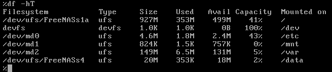

- Módulo: Fundamentos de Hardware
- Título del trabajo: A1: Almacenamiento NAS
- Componentes del grupo: Alejandro Ortega Freire
- Curso Académico: 2013/2014
- Fecha de entrega: 01 de mayo de 2014
1.- Introducción - NAS
NOTA 1: como no disponemos de hardware NAS para hacer las prácticas con todos los alumnos, nos vamos a crear nuestro propio NAS, en una MV usando la distro FreeNAS (Sistema Operativo BDS).
1.1- Enlaces de interés
 Principio del punto 1 |
Principio del punto 1 |  Fin del punto 2 |
Fin del punto 2 |  Índice
Índice
2.- Almacenamiento NAS
2.1- Preparar la Máquina Virtual
- Crear la MV en VBox. Elegir MV del tipo FreeBSD. Si la ISO es x86 elegimos de 32 bits, y si la ISO es amd64 escogemos de 64bits.
Imagen 1: Crear la MV para la instalación de FreeNAS.
- Además del disco duro virtual donde instalar FreeNAS, vamos a añadir a la máquina virtual 2 discos más de 2GB cada uno, para crear el volumen de almacenamiento del NAS.
Imagen 2: Discos de la MV.
- Configurar MV con la red en modo puente. Para que al terminar podamos acceder al NAS desde cualquier equipo de nuestra red.
2.2- Instalar FreeNAS
- Descargar la ISO del servidor del departamento, o desde la web de FreeNAS.
NOTA 2: si la ISO es de 32 bits crear la MV del tipo FreeBSD. SI la ISO es 64 bits, crear la MV del tipo FreeBDS-64-bits (RAM 1128 MB).
- Comenzamos la instalación.
Imágenes 3 a 6: Instalación de FreeNAS.
- Apagar el sistema. Quitar el disco de instalación (Fichero ISO).
Principio del punto 2 | Fin del punto 3 | Índice
3.- Configuración de FreeNAS
3.1- Primera configuración de FreeNAS
- Reiniciar la MV FreeNAS.
- Vamos a realizar la configuración inicial. Éste es el aspecto del menú:
Imagen 7: Menú de FreeNAS.
3.2- Configuración de red
NOTA 3: el interfaz de red no se llama eth0, eth0, wlan0, etc. sino em0. Por defecto el interfaz de red está configurado de forma automática (DHCP). Nosotros vamos a configurarlo de forma manual (static).
- Elegimos la opción 1 (Configure Network Interface) para configurar el interfaz de red: configurar la IP, máscara de red.
Imagen 8: Configurar la interfaz de red.
- Pulsamos 5 (Configure Static Route) para configurar la puerta de enlace.
Imagen 9: Configurar la puerta de enlace.
- Pulsamos 6 (Configure DNS) para configurar el servidor DNS.
Imagen 10: Configurar el servidor DNS.
PREGUNTA: ¿Qué parámetros de configuración de red, son los mínimos necesarios para tener una comunicación efectiva dentro de la red LAN? ¿ip, máscara, servidor dns, puerta de enlace, servidor dhcp, etc.?
Como mínimo para que haya comunicación entre dos equipos dentro de la red LAN deben conocerse: la dirección ip de los equipos (IP Address), la dirección de red (Network) y la máscara (Netmask).
- En la opción 9 entramos en una shell y podemos probar comandos como: ifconfig, ping, nslookup, df -hT.
- Para consultar las particiones usamos los comandos BSD siguientes: fdisk /dev/ada0, fdisk /dev/adad1, fdisk /dev/ada2, etc.
Imagen 11: Ejemplo de comando ifconfig.
Imagen 12: Ejemplo de comando ping.

Imagen 13: Ejemplo de comando df -hT.
- En la opción 7 (Reset WebGUI Login Credentials) podemos comprobar el usuario/contraseña por defecto que es:
- usuario: admin
- contraseña: freenas
Imagen 14: Usuario/contraseña por defecto.
- Con exit volvemos de nuevo al menú de configuración.
3.3- Comprobar que ha funcionado
- Para acceder al PANEL de configuración (GUI, por entorno gráfico) de FreeNAS, iniciamos un navegador web desde otro PC de la red. Y navegamos usando la IP del servidor FreeNAS.
Imagen 15: Acceso al panel de configuración de FreeNAS.
Principio del punto 3 | Fin del punto 4 | Índice
4.- Crear un volumen
- Para acceder al PANEL de configuración (GUI, por entorno gráfico) de FreeNAS, iniciamos un navegador web desde otro PC de la red. Y navegamos usando la IP del servidor FreeNAS.
- Si no recuerdas el usuario/clave... vuelve al la MV FreeNAS, usa la opción 7 (Reset Credentials) del menú.
- Ahora vamos a crear un VOLUMEN a partir de los dos discos creados de 2GB.
- Ir a Storage -> Create Volume.
- Elegir mirror (RAID1) con los dos discos y el montaje en /mnt/data.
- Si lo necesitamos, crear directorio /mnt/data, para montar el volumen.
Imagen 16: Crear volumen data.
Imagen 17: Volumen creado.
- Activar el servicio de carpetas compartidas, ir a Servicios -> Control de Servicios - > CIFS -> ON.
Imagen 18: Activar el servicio CIFS.
- Ir al servidor FreeNAS. Entrar en la Shell (Opción 9). Ejecutar los comandos siguientes:
- df -hT (para comprobar que está montado el volumen data)
- mkdir /mnt/data/public
- chmod 777 /mnt/data/public (creamos una carpeta de uso público lectura/escritura).
Imagen 19: Crear carpeta de uso público.
- Creamos un recurso compartida CIFS/SMB, ir a Sharing/Compartido -> Añadir recurso CIFS. Path a /mnt/data/public.
Imagen 20: Crear recurso compartido.
Imagen 21: Recurso compartido creado.
Principio del punto 4 | Fin del punto 5 | Índice
5.- Comprobar desde cliente
- Probar que podemos acceder a dicho recurso compartido SMB/CIFS, desde otro equipo de la red. Por ejemplo, usando un cliente Windows7.
- Acceder al recurso mediante un cliente Windows 7.
Imagen 22: Acceder al recurso con cliente Windows 7.
- Se crea un fichero txt de prueba (PruebaNAS.txt) para comprobar que desde el cliente se pueden crear/modificar archivos del recurso public.
Imagen 23: Crear fichero de prueba desde el cliente Windows 7.
- A través del comando cat /mnt/data/public/PruebaNAS.txt se comprueba desde la consola de FreeNAS el contenido del fichero de creado.
Imagen 24: Visualizar contenido de PruebaNAS.txt desde consola.
Principio del punto 5 | Índice
Alejandro Ortega Freire 1ºASIR
Fundamentos de Hardware